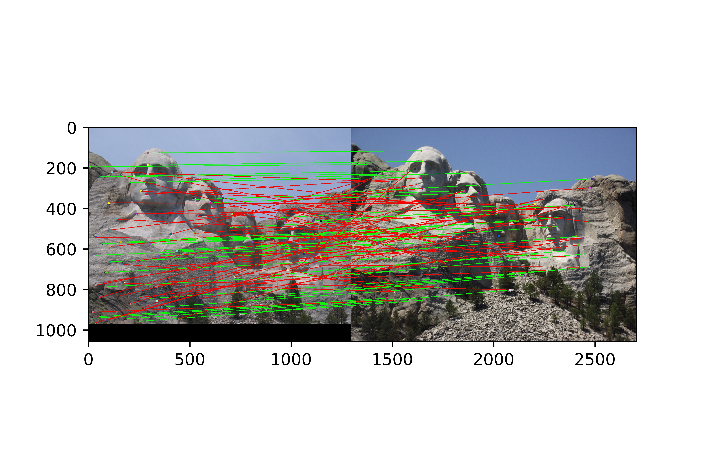
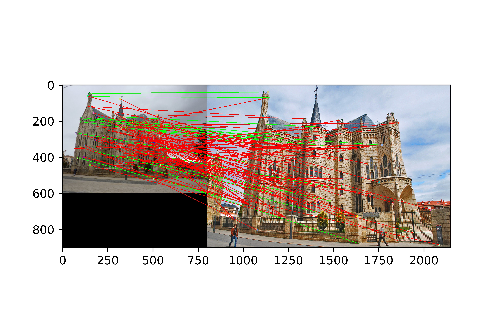
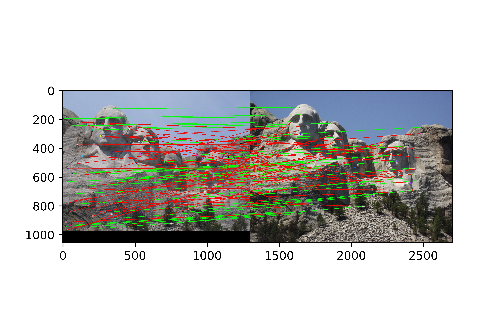
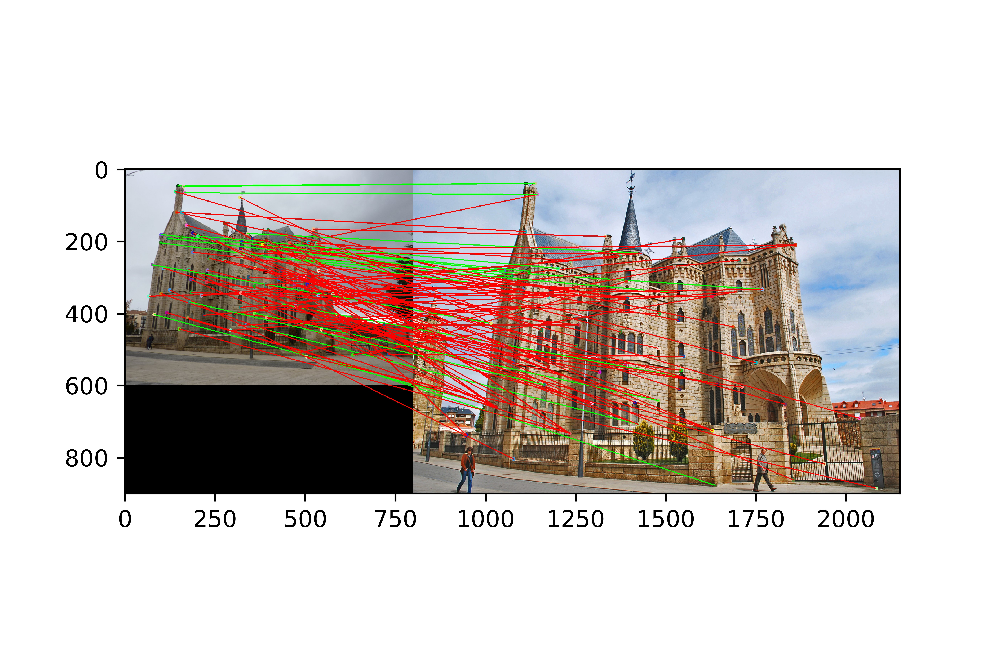
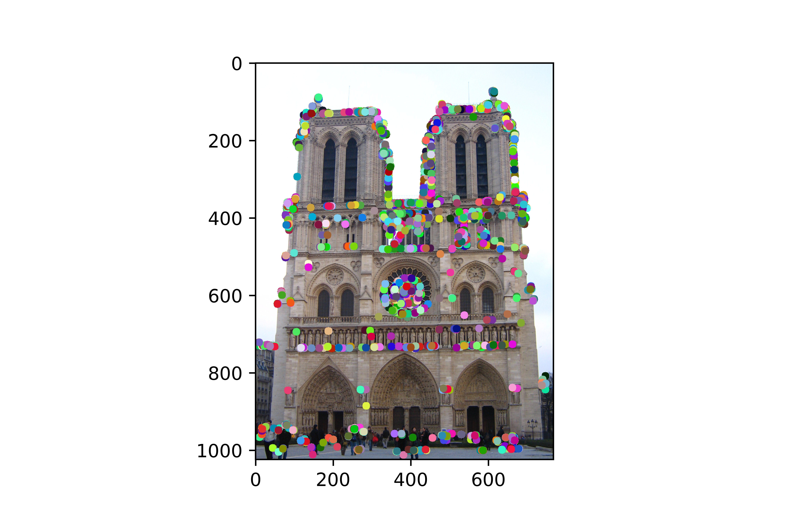
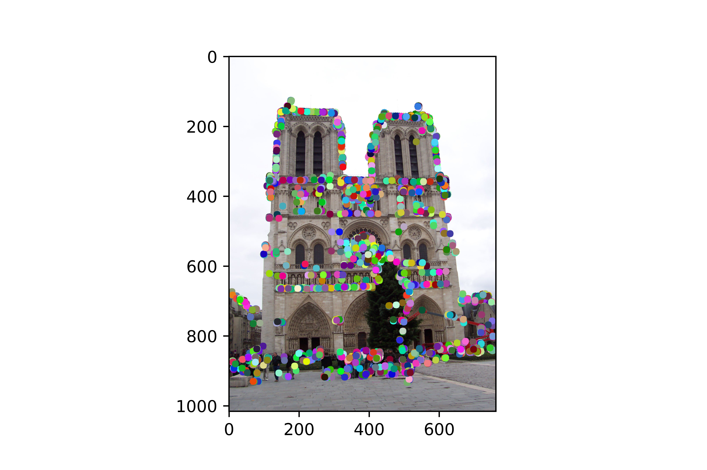
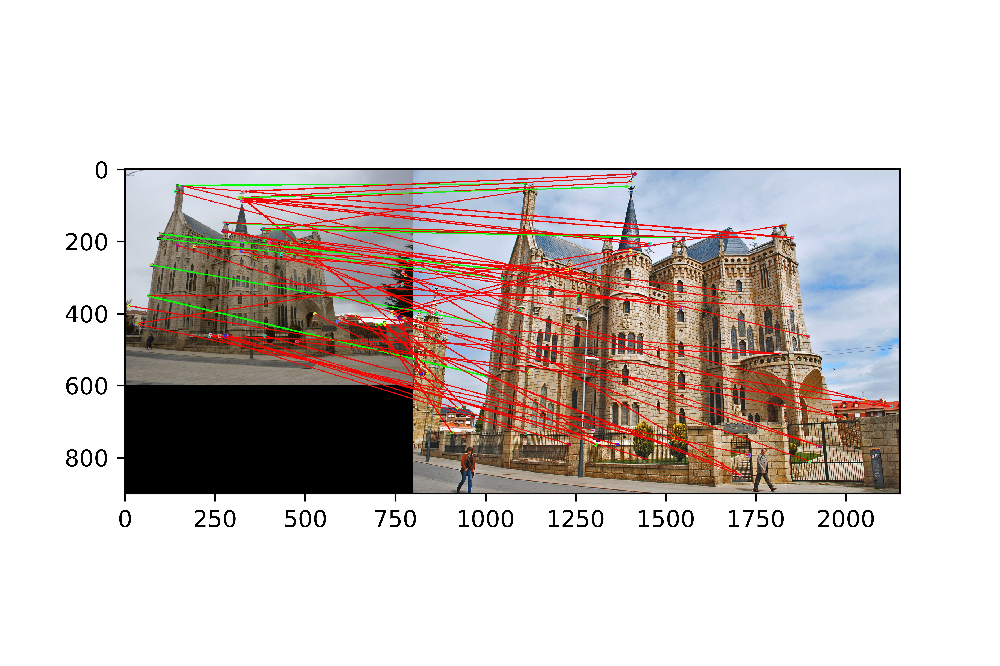

Project 2: Local Feature Matching
This project implements feature detection, description and matching which are essential components of various computer vision applications. The basic idea is to detect interest points which are called "corners" and then make a representation of these points and their neighbors and feed them to matching algorithm which in turn is responsible for finding similarities in corner representation space. This project contains three major steps:
- Interest point detection using Harris corner detector and adaptive non-maximum suppression (ANMS)
- Scale-invariant feature transformation (SIFT) for feature detection
- Feature matching based on nearest neighbor distance ratio
In following, feature description and feature matching is first described and compared the results compared with ground truth using cheat points. Then corner detection algorithm is applied and results compared with ground truth.
Feature Description
It turns out that finding interest points in two images which are undergoing local feature matching, is not enough for when the images have same orientation, scale, etc. However, when you have images of different scales and rotations you need to use scale-invariant feature transform or "SIFT-like" representations. In this project, very simple version of SIFT is implemented. First, the gray scale version of the image is filtered with a Sobel operator to find the derivatives of the image in horizontal and vertical directions. Then magnitude and phase of these images are calculated using the derivative images. Magnitude image undergoes a Gaussian filter to alleviate the probable noise in images and retain useful information. The kernel which is being used in this step is very important for extracting the features and making a descent representation of images in interest points neighborhood. Here, we represent each of these neighborhoods with 1x128 vector. A 16x16 window is applied to extract the patches around each interest point. In turn, this 16x16 image patch is converted to 16, 4x4 patches and the histogram of phases are extracted out of these small 4x4 windows. 8 bins are create the histogram of phase. These histograms are weighted with corresponding magnitude windows. The histograms are normalized at the end which means the descriptors will not store the magnitude of gradients, only their relations to each other. This should make the descriptors invariant against global, uniform illumination changes. The histogram values are also thresholded to reduce the influence of large gradients. This will make the information partly immune to local, non-uniform changes in illumination.

|
Feature Matching
Describing each of the features with a 1x128 vector, now the distance between all of features from one image can be calculated with the features from another image. Thresholding this value and matching the nearest neighbors will result in lots of self similarities. To address this problem, we need to use nearest neighbor distance ratio instead. This contains finding two nearest neighbors per each feature and find the ratio of these distances. Sorting by this ratio, puts matches in order of confidence. As the confidence increases, this is more likely to find the correct match.
Primary Results Using Cheat Interest Points
After implementing feature matching step the algorithm was tested without using SIFT-like feature extraction step. In this step, 16x16 image patches are fed to matching algorithm. Accuracy for Notre Dame image was 43%, for Mount Rushmore 23% and for Episcopal Gaudi 7%. In this step, 3x3 Sobel filter applied to find the derivatives and the magnitude image of gradients blurred with a 9x9 Gaussian kernel.
Applying SIFT algorithm as feature description step, the accuracy increased to 75%, 43% and 18% for Notre Dame, Mount Rushmore and Episcopal Gaudi images, respectively. The results are shown in the following. Note that cheat points are used in all of these images and corner detection has not implemented yet. A 3x3 Sobel operator is used to calculate the horizontal and vertical gradients and the magnitude image of gradients is undergone a 7x7 Gaussian filter. Changing any of these parameters results in a accuracy decrease of matching algorithm. This indicates that the best representation of feature space occurs when a gaussian filter of size 7x7 is used to blur the gradient magnitude image. This could be because of the characteristics of objects and edges which are present in these images. An image with more details in it may need finer Gaussian kernel to extract the SIFT-like features.
 



|
Interest Point Detection
Simply, a corner define as a little patch of an image that makes a large variation when moved around. One of the ways to find these corners in the image is Harris corner detection algorithm. The general idea behind this algorithm is to maximize the following equation:

|
It turns out that the eigenvalues of the image matrix can help determine the suitability of a window. So, implementing the the harris corner detection algorithm is all about finding the eigenvalues of an image and thresholding it to find the appropriate corners. For Notre Dame image pair, first horizontal and vertical derivatives of black and white images found with Sobel filter of size 3x3. Then the outer products of these images filtered with a Gaussian Kernel of size 16x16. The extracted Harris corners are shown in figure below.
|   |
One problem with figures above, is that most of the detected corners are focused in specific areas and they all potentially could be a better corner than the ones in other areas and this in turn, cause uneven distribution of feature points in the image. This problem occurs since Harris corner detector only looks at the local maxima in the interest function. One solution to overcome this problem is adaptive non-maximum suppression (ANMS) algorithm. This algorithm looks at the features within radius R of an image and only detects those features which are significantly important in interest function. Therefore, ANMS algorithm first sorts the features based on their importance in response function and then corresponds a radius to each of these features. This radius is the minimum of the distance function which measures the the distances between a feature and all the features with higher response strength. Robust parameter is used to both enhance the performance and decrease the run time for this algorithm. This means that only the feature points which have greater (more than 10%) response strength than the examined corner are allowed in the distance function.
Results Using Harris Corner Detection
Using Harris corner detection, the accuracy become 70% for Notre Dame image. In this case, first 2000 corners was selected with highest response strength. As it is shown in figure below, it detects most of the points from middle of the image (round shaped area).

|
Using Harris corner detection along with ANMS algorithm ends up with better performance. This time, detected corners are more scattered within the image and performance increases to 86%. The final image is shown below.

|
Note that the accuracy could be even higher for this pair (I got 92%) with different parameters. But the shown results are preferred, because this shows a better distributed of feature points in Notre Dame image.
Results from other images
Feature matching for Mounts Rushmore pair captured slightly different from what we get for Notre Dame pair. In Notre Dame pair, images are so similar to each from different aspects. However, Mount Rushmore pair is slightly harder. The reason is the illumination in this pair is different for two images. Using the parameters from previous pair, the corner detection algorithm only detects a few points (~500) as feature points. This in turn, results in a high number of corners(~20000) in the second image. To address this problem, the interest values are normalized and then being threshold. This small change improved the accuracy from 56% to 85%.

|
The last image pair is Episcopal Gaudi pair which is the hardest pair among these pairs. This is hard because there is a huge scale difference and larger rotation in comparison to previous pairs as well as the change in illumination. This makes the corner detection action harder and the implemented algorithm need to account for all these variations. However, our simple code does not account for these problems and therefore, the results shown below does not seem reasonable. The accuracy for this pair is 18% in its best.
|  |
Conclusions
Feature detection and matching is an important task in many computer vision applications. Challenges in this problem encompass identifying what features are, in detection step, and further describing those features for other tasks such as feature matching.
One of the popular methods in feature points in an image is Harris corner detector. A corner defines as a patch of an image which changing the location of that patch around the neighbor voxels, makes a huge difference in corresponding statistics of the patch. To avoid non-even distribution of these corners within the image using Harris detector, adaptive non_maximal suppression is suggested. Generally, corner detection is dependent on the characteristics of an image. Using different kernels to filter the image, thresholding the image, patch size, normalization factor, etc. are important parameters to extract appropriate corners out of the image.
Second step is in local feature matching scenario is referred as feature description. A good descriptor should account for different changes such as shift, rotation, scale, illumination change, etc. in different image pair. One good candidate, yet easy to implement feature describer algorithm is SIFT. This method is based on describing the gradient directions of feature points weighted by gradient magnitude of them. To obtain a descent representation of feature points, parameters should be optimized based on the image characteristics.
The last step is feature matching. In this project, nearest neighbor distance ratio is used to overcome self similarity problems of selecting nearest neighbors as matches. Confidence is defined as a function of distance ratio in this algorithm and sorting the matching corners with respect to their confidences return the corresponding points in an image pair with higher quality.